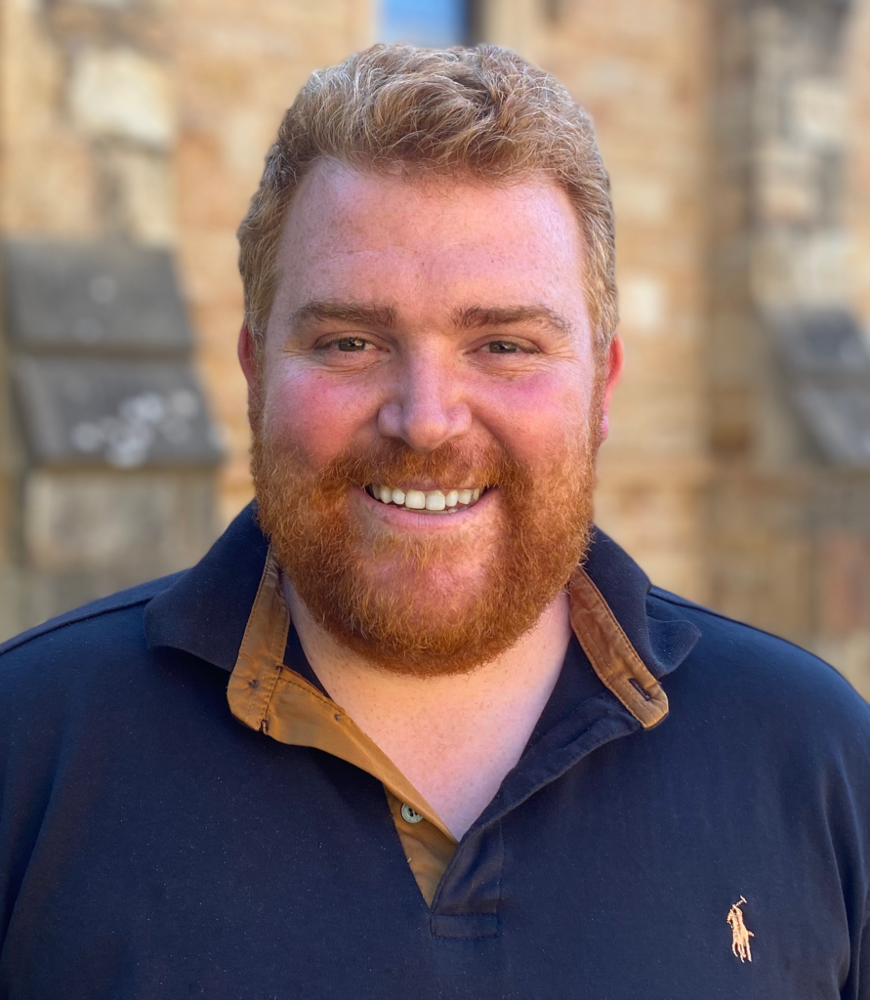
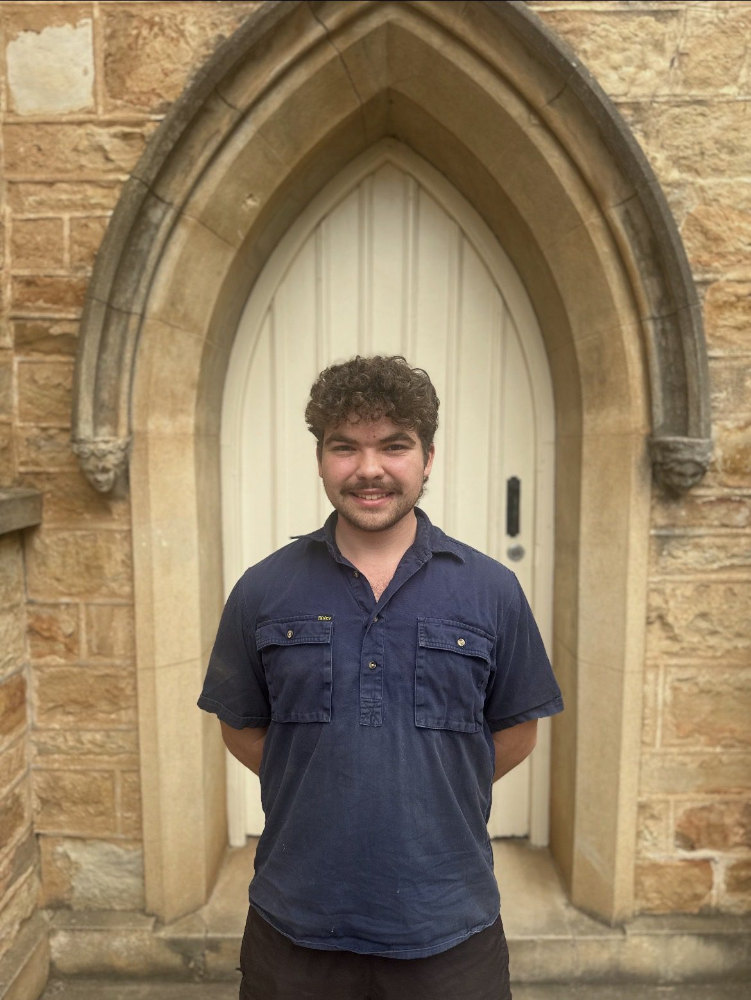

Our ministers and elders are ordinary people called to serve an extraordinary God — here to preach, shepherd, and walk alongside this church family.
The New Testament pattern is clear: the church is led by ordained elders who preach the Word, administer the sacraments, and care for the congregation's spiritual welfare. At QPC, our pastor and ruling elders take that calling seriously.

Robert has served as Pastor of Queanbeyan Presbyterian Church since 2022. His ministry is marked by careful expository preaching and a genuine concern to see the text connect with everyday life.
He is particularly passionate about disciple-making and seeing the gospel reach the wider Queanbeyan community. Outside the pulpit, he enjoys anything mechanical and welding, and is married to Lee. Together, they have 1 child, Benjamin.

At just 19 years old, Harry is the youngest member of the pastoral team. He was born in Brisbane. His goal currently is to be able to work in schools as a chaplain or, if God sees fit, become an ordained minister.
In his spare time, Harry enjoys pretending to be a puppet frog.
Our elected elders share in the government and spiritual oversight of the congregation. Elected by the congregation and ordained to their office, they meet regularly with the Assessor Elders as the Session to pray, deliberate, and care for the church's spiritual welfare.
We have one moderator appointed by the Presbytery, who supports our pastor and Elders.
We also have three assessor elders appointed by the Presbytery. They, along with the ruling Elders, make up our Session.
Our Committee of Management supports the Session by overseeing the practical and legal affairs of the congregation — managing finances, property, and compliance so that the church can focus on its mission. Members are elected by the congregation.
"Pay careful attention to yourselves and to all the flock, in which the Holy Spirit has made you overseers, to care for the church of God, which he obtained with his own blood."Acts 20:28 · ESV
Our ministers are glad to meet — whether you're new to church, working through questions, or facing a difficult season.
Email a Minister Plan Your VisitSubscribe to the podcast and get new sermons automatically every week — on Spotify, Apple Podcasts, or any podcast app.
Listen on Spotify